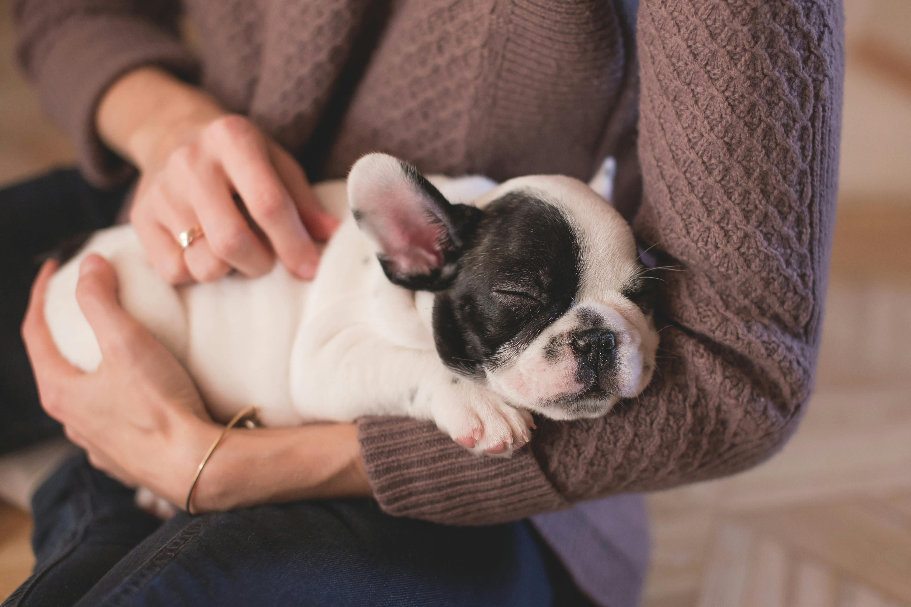

Cuidar Pets
Conectando tutores e cuidadores

Sobre Nós
Somos apaixonados por animais e acreditamos que cada pet merece cuidado, carinho e atenção. O Cuidar Pets nasceu para conectar tutores de animais com cuidadores experientes e confiáveis. Nossa missão é garantir bem-estar e tranquilidade tanto para os pets quanto para seus donos.
Serviços
- Pet Sitter: Visitas em casa para alimentação, passeios e cuidados básicos.
- Hospedagem Domiciliar: Cuidadores preparados para receber seu pet com muito amor.
- Passeios: Passeadores experientes para manter a rotina ativa do seu pet.
- Serviços Extras: Banho, tosa e adestramento (consultar disponibilidade).